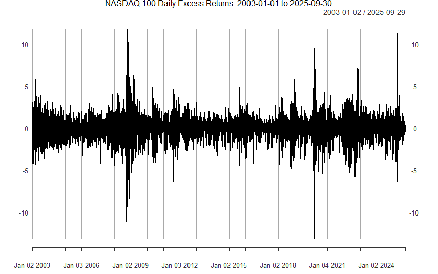
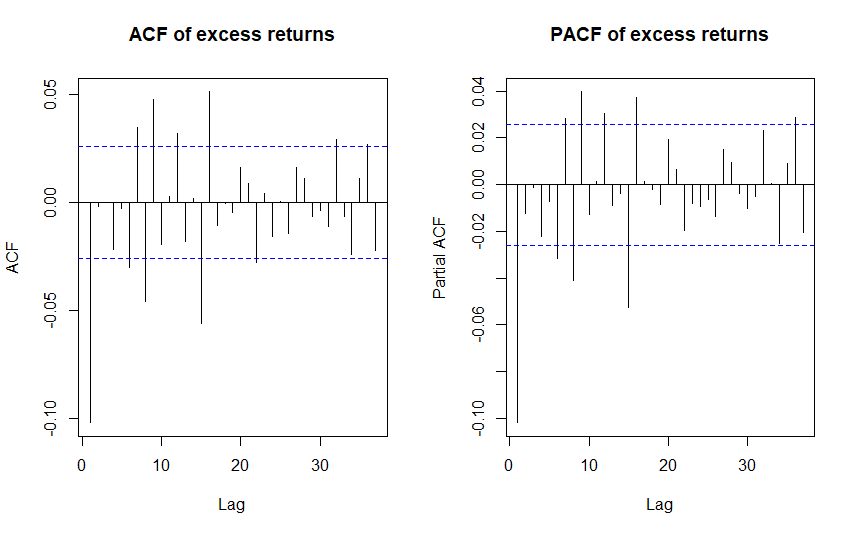
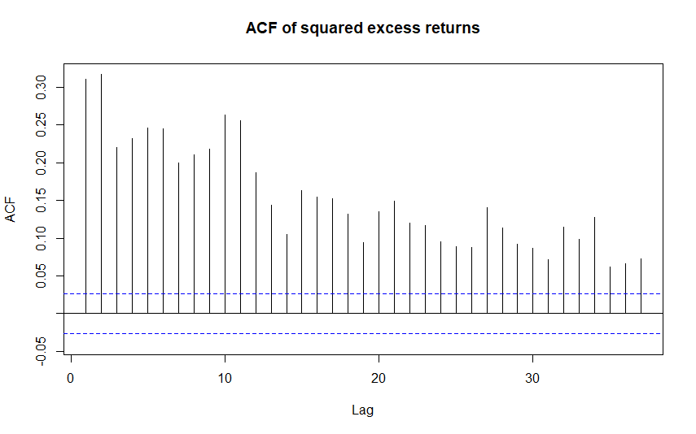
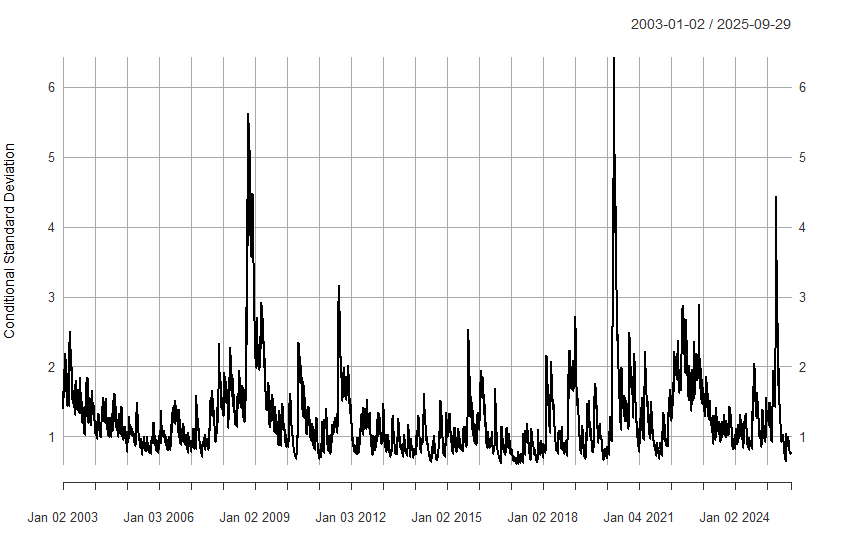
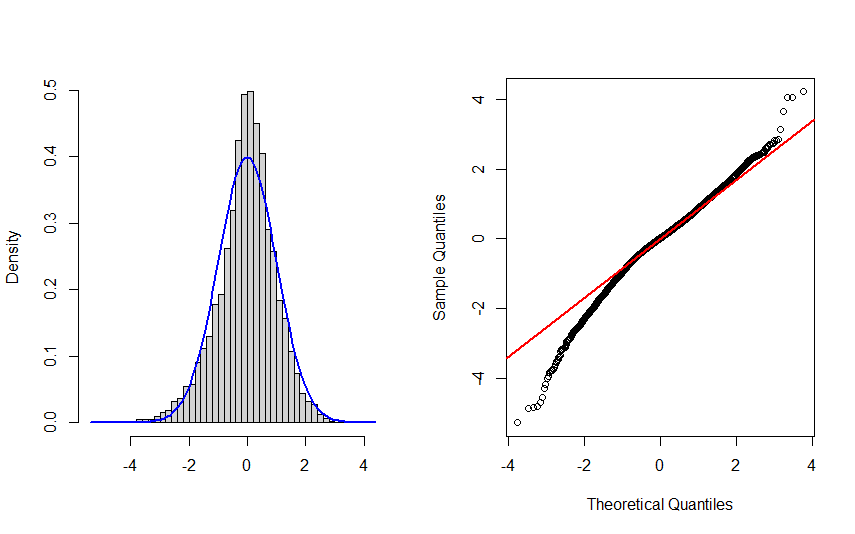

9 Volatility modelling: AR-GARCH model
9.1 Modelling conditional variance
ARMA models can be characterized as models for the conditional mean of a stationary process.
- When the invertibility condition holds, ARMA processes have the AR(\(\infty\)) representation from which it can be seen that the conditional expected value of \(y_{t}\), conditional on the past of the process \(\left\{y_{t-1},y_{t-2},\ldots\right\}\), is \(\mathsf{E}_{t-1}(y_t) = \mu -\sum_{j=1}^{\infty}\pi_{j} (y_{t-j}-\mu)\).
The conditional variance of an ARMA process (model) \(y_t\) is \[\begin{eqnarray*} \mathsf{Var}_{t-1}(y_t) &=& \mathsf{E}_{t-1}(y_t-\mathsf{E}_{t-1}(y_t))^2 \\ &=& \mathsf{E}_{t-1}(u^2_t) \\ &=& \mathsf{E}(u^2_t) \qquad (\mathrm{CEV2}) \\ &=& \sigma ^{2}. \end{eqnarray*}\] This shows that evident systematic variation in conditional variance, that several time series contain, cannot be taken into consideration with an ARMA model. Typical examples of such time series are financial time series and especially different asset return series.
Empirical example. The NASDAQ 100 (ticker symbol ^NDX) is a major stock market index that tracks the performance of 100 of the largest non-financial companies listed on the NASDAQ stock market (U.S. stock market).
It includes 100 of the largest domestic and international companies listed on NASDAQ, weighted by a modified market capitalization method to limit the influence of the very large firms. The index excludes financial companies and is heavily concentrated in the technology sector and dominated by a few extremely large companies like (as in 2025) NVIDIA Corporation (NVDA), Microsoft Corp. (MSFT), Apple Inc. (AAPL) and Amazon.com Inc. (AMZN).
The NASDAQ 100 is widely viewed as the benchmark for large-cap growth stocks.
The data source: quantmod package in R, which accesses publicly available financial data—seemingly sourced from Yahoo Finance.
Let us consider excess stock returns of the NASDAQ 100 over the 3-Month Treasury Bill rate. As a simple approximation, we can think that we are interested in the percentage changes (log-differences) of the NASDAQ 100 index adjusted for risk-free rate return (see Transformations in Section 1). Below we depict the daily excess stock returns between 1.1.2003–30.9.2025.
The return series seems quite stationary in terms of its level. Below we depict the sample autocorrelation and partial autocorrelation functions for the first 40 lags and their approximate 95% critical bounds. These suggest that there is some autocorrelation but its degree is not very high.
Typically asset returns are almost non-autocorrelated
For this sample period and NASDAQ returns, the resulting Ljung-Box test statistics reject the null hypothesis of no autocorrelation with all the relevant statistical significance levels.

The asset return series exhibits, however, some even more clear and typical variation, which is reflected by the autocorrelation function of the squared observations: All the reported autocorrelation coefficients of squared observations exhibit clear positive autocorrelation exceeding the 95%-critical bound. The approximate \(p\)-value of the McLeod Li test with \(H=10\), and also with other lag length selections, are zero with four decimal precision.
There are periods (see above) during which the variation of the series is either larger or smaller than on average. This “volatility clustering” is certain type of heteroskedasticity.
When the definition of variance is taken into account, it is natural to investigate this using the autocorrelation function of the squared observations. Notable are also the large difference between large and small absolute values, which suggests a more fat-tailed distribution than the normal distribution.

In what follows, heteroskedasticity similar to that of the stock return series above is thought to be not related with changes in unconditional variance, but rather with changes in the conditional variance when conditioning on the past values of the series. Next, we will first consider some general aspects of models used in modelling conditional variance, and then focus on some particular models that are most common in practice.
9.2 Model formulation
In this section, we consider an AR-GARCH model determined by the following two equations \[\begin{equation*} y_{t} = \nu + \phi_{1}y_{t-1}+\cdots+\phi_{p}y_{t-p}+u_{t}, \end{equation*}\] \[\begin{equation*} u_{t} = h_{t}^{1/2}\varepsilon_{t},\quad \varepsilon_{t}\sim\mathsf{iid}\left(0,1\right), \end{equation*}\] where \(h_{t}\) is a function of the variables \(u_{t-j}\), \(j>0\), and the error term \(\varepsilon_{t}\) is assumed to be independent of the variables \(y_{t-j}, \, j>0\), and hence also of the variables \(u_{t-j}\), \(j>0\). In other words, we consider an AR(\(p\)) model whose error term is conditionally heteroskedastic.
- The coefficients \(\phi_{1},\ldots,\phi_{p}\) are assumed to satisfy the (sufficient) stationarity condition of the AR(\(p\)) process: \(1 - \phi_1 z - \cdots - \phi_p z^p = \phi(z) \neq 0, \, \mathrm{when} \, |z| \le 1\).
Regarding the conditional variance, by its definition, the variance of a random variable is associated with the squares of the random variable. Therefore, it seems natural that the conditional variance \(h_t\) would depend on the past squared values of the process. For concreteness sake, consider a general GARCH(\(r\),\(s\)) model \[\begin{equation*} h_{t}=\omega+\beta_{1}h_{t-1}+\cdots+\beta_{r}h_{t-r}+\alpha_{1}u_{t-1}^{2}+\cdots+\alpha_{s}u_{t-s}^{2}, \end{equation*}\] whose parameters are assumed to satisfy the required conditions for non-negativeness, identification, and strict stationarity (to be considered below).
As before, we denote the conditional expectation as \(\mathsf{E}_{t-1}\left(\cdot\right)=\mathsf{E}\left(\cdot\left\vert y_{s},\text{ }s\leq t-1\right.\right)\). Because \(u_{t}\) is a function of the variables \(y_{t}\), …, \(y_{t-p}\), the conditional variance \(h_{t}\) is a function of the variables \(y_{t-j}\), \(j>0\). Therefore, we can use the same arguments as considered, e.g., in forecast construction (see CEV4) to conclude that in the AR-GARCH model \[\begin{equation*} \mathsf{E}_{t-1}\left( u_{t}\right) =h_{t}^{1/2} \mathsf{E}_{t-1}\left(\varepsilon_{t}\right) =h_{t}^{1/2}\mathsf{E}\left(\varepsilon_{t}\right)=0. \end{equation*}\] Together with this result, the model equations of the AR-GARCH model can be used to justify the following two results \[\begin{equation*} \mathsf{E}_{t-1}(y_t) = \nu + \phi_{1} y_{t-1}+ \cdots + \phi_{p}y_{t-p} \quad \mathrm{and} \quad \mathsf{Var}_{t-1}(y_t)=h_t. \end{equation*}\]
- The latter result can be justified by noticing that \(y_{t} = \mathsf{E}_{t-1}\left(y_{t}\right) + u_{t}\) and that \[\begin{eqnarray*} \mathsf{Var}_{t-1}\left(y_{t}\right) &=& \mathsf{E}_{t-1}(y_t - \mathsf{E}_{t-1}(y_t))^2 \\ &=& \mathsf{E}_{t-1}\left(u_{t}^{2}\right) \\ &=& h_t \mathsf{E}(\varepsilon_{t}^{2}) \\ &=& h_{t}, \end{eqnarray*}\] where the result CEV2 and the identity \(u_{t}^{2}=h_{t}\varepsilon_{t}^{2}\) is used (see the general model definition above).
These two results demonstrate that the conditional mean and conditional variance of the process \(y_{t}\) depend on the past values of the process. Based on the above points, building a volatility model, that is selecting the model equation for \(h_t\), roughly consists of the following steps:
Finding an adequate specification for the conditional mean \(\mathsf{E}_{t-1}(y_t)\) (e.g., to select a suitable AR or ARMA model, and including also possible deterministic terms) is necessary to obtain a suitable specification for the conditional variance.
Checking for the (conditional) heteroskedasticity of the error term. This can be based on residuals, as they are empirical counterparts of the error terms. That is testing “ARCH effects” using, e.g., the McLeod-Li test.
Finding a sufficient specification for the conditional variance \(h_t\). There are a lot of different alternative model specifications to GARCH(\(r,s\)) suggested in the econometric literature. Replacing it with some of the alternatives yield a straightforward extension of the AR-GARCH model introduced above.
Estimation of the full model can be carried out by the method of maximum likelihood (see details below).
9.3 GARCH(1,1) and ARCH(\(s\)) models
Instead of the general GARCH(\(r,s\)) model, the GARCH(1,1) model \[\begin{equation*} h_t = \omega + \beta_1 h_{t-1} + \alpha_1 u^2_{t-1} \end{equation*}\] has been found adequate for most (financial) time series data.
In this GARCH(1,1) case, the non-negativeness of \(h_t\) requires \(\omega > 0\) and \(\alpha_1, \beta_1 \ge 0\). Moreover, for \(\beta_1\) to be identified, \(\alpha_1\) must be strictly positive (\(\alpha_1 > 0\)).
In the GARCH(\(r,s\)) model, these non-negativeness conditions are clearly more complicated.
Another special case of GARCH models is obtained when \(r=0\). That is the “GARCH-part” is missing and the GARCH(\(r,s\)) model reduces to an ARCH(\(s\)) model \[\begin{eqnarray*} h_t = \omega + \sum_{i=1}^{s} \alpha_i u^2_{t-1}. \end{eqnarray*}\]
In line with the idea of capturing volatility clustering with ARCH and GARCH models, the periods of high (and low) conditional variance tend to persist. This is easy to see with the ARCH(1) model (\(s=1\)) \[\begin{equation*} h_t = \omega + \alpha_1 u^2_{t-i}, \end{equation*}\] where \(\omega, \alpha_1 \ge 0\). A large shock (\(u^2_{t-1}\)) increases \(h_t\), which then subsequently increases \(u^2_t\) and \(h_{t+1}\). This same logic holds also for more general ARCH and GARCH models. Moreover, in the ARCH(1) model, assuming normality of \(\varepsilon_t\), the (unconditional) kurtosis of \(u_t\) is \[\begin{equation*} \frac{\mathrm{E}(u^4_t)}{\mathrm{E}(u^2_t)^2} = \frac{3 (1 - \alpha^2_1)}{1 - 3 \alpha^2_1}. \end{equation*}\] Kurtosis is finite (i.e. the 4th moment exists) if \(3 \alpha^2_1 < 1\) and larger than 3 implied by the normal distribution. The ARCH(1) model is hence capable of capturing excess kurtosis often present in financial data.
Large outliers (in absolute value) appear more often than implied by the \(\mathsf{nid}\) innovations in (observed) asset returns.
Similar result on excess kurtosis holds also for more general ARCH and GARCH models, but the formulae become more complicated.
As a summary of large past research, the GARCH(1,1) model has generally been found a successful and parsimonious alternative to the ARCH(\(s\)) model with a typically large \(s\) for asset returns. Why? By recursive substitutions, we get \[\begin{eqnarray*} h_t &=& \omega + \beta_1 h_{t-1} + \alpha_1 u^2_{t-1} \\ &=& \omega + \beta_1 \omega + \beta_1^2 h_{t-2} + \alpha_1 \beta_1 u^2_{t-2} + \alpha_1 u^2_{t-1} \\ & \vdots & \\ &=& \omega \sum_{j=0}^{k} \beta_1^j + \alpha_1 \sum_{j=0}^{k} \beta_1^j u^2_{t-1-j} + \beta_1^{k+1} h_{t-k-1}. \end{eqnarray*}\] This suggests that in the case \(\beta_1 < 1\), \[\begin{equation*} h_t = \omega \sum_{j=0}^{\infty} \beta_1^j + \alpha_1 \sum_{j=0}^{\infty} \beta_1^j u^2_{t-1-j}, \end{equation*}\] which is a particular kind of ARCH(\(\infty\)) form. Therefore, we can conclude that GARCH(1,1) is able to capture volatility clustering in a parsimonious way via only three parameters.
Another perspective on the GARCH models, and specifically to the GARCH(1,1) model, is obtained by adding \(u_t^2\) on both sides of the model equation. Therefore, the GARCH(1,1) can be rewritten \[\begin{equation*} u^2_t = \omega + (\alpha_1 + \beta_1) u^2_{t-1} + \xi_t - \beta_1 \xi_{t-1}, \end{equation*}\] where \(\xi_t = u^2_t - h_t = h_t(\varepsilon^2_t-1)\) and \(\mathrm{E}(\xi_t)=0\). This is an ARMA(1,1) type of presentation for \(u_t^2\).
As for the ARMA(1,1) process, the condition for weak and strict stationarity is \(\alpha_1 + \beta_1 < 1\) (together with restrictions \(0 \le \alpha_1, \beta_1 \le 1\) to, e.g., guarantee the non-negativity of \(h_t\)).
Moreover, the unconditional variance (provided stationarity) is \[\begin{equation*} \mathrm{E}(u^2_t) = \frac{\omega}{1 - \alpha_1 - \beta_1}. \end{equation*}\]
9.4 Parameter estimation
If it is assumed that the error term is Gaussian \[\begin{equation*} \varepsilon_{t}\sim\mathsf{nid}\left(0,1\right), \end{equation*}\] the (conditional) likelihood function can be derived following analogous principles as in ARMA models. In other words, assuming \(\varepsilon_t \thicksim \mathsf{nid}(0,1)\), we get \[\begin{equation*} u_t = h^{1/2}_t \varepsilon_t, \quad \varepsilon_t \thicksim \mathsf{nid}(0,1), \end{equation*}\] where \(h_t = h_t(y_{t-1}, y_{t-2},\ldots)\), \(\varepsilon_t\) and vector \((y_{t-1}, y_{t-2},\ldots)\) are independent, and \(u_t = y_t - \mathsf{E}_{t-1}(y_t)\). Assume also that \(y_t\) is stationary. Given the above assumptions and the conditional moments (conditional mean and variance) of the AR-GARCH model, we get the conditional density function of the observation \(y_t\) as \[\begin{equation*} y_t|\{y_{t-j}, \, j \ge 1 \} \thicksim \mathsf{N}(\nu + \phi_1 y_{t-1} + \cdots + \phi_p y_{t-p}, h_t). \end{equation*}\] Therefore, it can be concluded that the conditional distribution of \(y_{t}\), conditional on \(\ubar{\mathbf{Y}}_{t-1}=(y_1, \ldots y_{t-1}), \, t=1,\ldots,T\), is Gaussian with the conditional mean (see above) \(\nu + \phi_{1}y_{t-1}+\cdots+\phi_{p}y_{t-p}\) and conditional variance \(h_{t}\) where the model equation for \(h_{t}\) needs to be specified.
Using the observed time series and required initial values (depending on the specific model) \(\ldots, y_{-1}, y_0, y_1, \ldots, y_T\), as in the parameter estimation of ARMA models, this leads to the conditional joint density function \[\begin{equation*} \prod_{t=1}^{T} f_{y_t|\ubar{\mathbf{Y}}_{t-1}} = (2\pi)^{-T/2} \cdot \prod_{t=1}^{T} h^{-1/2}_t \cdot \mathrm{exp}\Big(-\frac{1}{2} \sum_{t=1}^{T} \frac{u^2_t}{h_t} \Big). \end{equation*}\] Denote the parameter vector of the AR-GARCH model \(\boldsymbol{\vartheta}=\left(\boldsymbol{\phi},\boldsymbol{\lambda}\right)\) where
\(\boldsymbol{\phi} = (\nu, \phi_1,\ldots, \phi_p)\) contains parameters related to the conditional mean, and
\(\boldsymbol{\lambda} = (\omega, \alpha_1, \ldots, \alpha_s, \beta_1, \ldots, \beta_r)\) contains the parameters of the model for the conditional variance.
The log-likelihood then becomes (omitting constant terms not dependent on the model parameters) \[\begin{equation*} l(\boldsymbol{\vartheta}) = \sum_{t=1}^{T} l_t(\boldsymbol{\vartheta}) = -\frac{1}{2} \sum_{t=1}^{T} \mathrm{log}\, h_t(\boldsymbol{\phi}, \boldsymbol{\lambda}) - \frac{1}{2} \sum_{t=1}^{T} \frac{u_t(\boldsymbol{\phi})^2}{h_t(\boldsymbol{\phi},\boldsymbol{\lambda})}, \end{equation*}\] with \(u_t(\boldsymbol{\phi}) = y_t - \nu - \phi_1 y_{t-1} - \cdots - \phi_p y_{t-p}\) and \(h_t(\boldsymbol{\phi}, \boldsymbol{\lambda})\) are functions of the parameters \(\boldsymbol{\phi}\) and \(\boldsymbol{\lambda}\).
- As an example, in the GARCH(1,1) case \(r=s=1\) and hence \(h_{t} = \omega + \beta_1 h_{t-1} + \alpha_1 u_{t-1}^{2},\) for the conditional variance. This means that \(\boldsymbol{\lambda} = (\omega, \alpha_1, \beta_1)\).
Maximization of the likelihood function is performed using numerical methods similar to the ARMA models.
If the normality assumption of the error term \(\varepsilon_t \thicksim \mathsf{nid}(0,1)\) made above holds, the usual asymptotic properties of the maximum likelihood estimator (consistency and asymptotic normality) hold. If the Gaussianity assumption is found inappropriate, one could either (or both):
Use a non-Gaussian distribution, like the \(t\)-distribution for the error term. This leads to the different form for the log-likelihood function, but the general lines to obtain it are the same as above.
Modify the asymptotic distribution and interpret the maximum likelihood estimator (MLE) as quasi-MLE (QMLE).
Concerning the QMLE approach, if the likelihood function is maximized at \(\boldsymbol{\widehat{\vartheta}}=(\boldsymbol{\widehat{\phi},\widehat{\lambda})}\), it can be shown, even without the normality assumption and under general assumptions and regularity conditions, it holds \[\begin{equation*} \widehat{\boldsymbol{\vartheta}} \underset{as}{\sim}\mathsf{N}\left(\boldsymbol{\vartheta},\boldsymbol{\mathrm{V}}\left(\boldsymbol{\vartheta}\right)^{-1} \boldsymbol{\mathrm{B}} \left(\boldsymbol{\vartheta}\right) \boldsymbol{\mathrm{V}}\left(\boldsymbol{\vartheta}\right)^{-1}\right), \end{equation*}\] where \[\begin{equation*} \boldsymbol{\mathrm{V}}\left(\boldsymbol{\vartheta}\right) = \mathsf{E}\left[-\partial^{2}l(\boldsymbol{\vartheta})/\partial\boldsymbol{\vartheta}\partial\boldsymbol{\vartheta}^{\prime}\right] \end{equation*}\] and \[\begin{equation*} \boldsymbol{\mathrm{B}}\left(\boldsymbol{\vartheta}\right) =\mathsf{E}\left[\sum_{t=1}^{T}\left(\frac{\partial}{\partial\boldsymbol{\vartheta}}l_{t}(\boldsymbol{\vartheta})\right) \left(\frac{\partial}{\partial\boldsymbol{\vartheta}}l_{t}(\boldsymbol{\vartheta})\right)^{\prime}\right], \end{equation*}\] where \(l_{t}(\boldsymbol{\vartheta})\) is as described above and its specific form naturally depends on the selected AR-GARCH model.
Using the empirical counterparts of the matrices \(\boldsymbol{\mathrm{V}} \left(\boldsymbol{\vartheta}\right)\) and \(\boldsymbol{\mathrm{B}}\left(\boldsymbol{\vartheta}\right)\), namely \[\begin{equation*} \widehat{\boldsymbol{\mathrm{V}}}(\boldsymbol{\widehat{\vartheta})}=-\partial^{2}l(\boldsymbol{\widehat{\vartheta}})/\partial\boldsymbol{\vartheta}\partial\boldsymbol{\vartheta}^{\prime} \quad \mathrm{and} \quad \widehat{\boldsymbol{\mathrm{B}}}(\boldsymbol{\widehat{\vartheta})}=\sum_{t=1}^{T}\left( \frac{\partial}{\partial\boldsymbol{\vartheta}}l_{t}(\boldsymbol{\widehat{\vartheta}})\right)\left(\frac{\partial}{\partial\boldsymbol{\vartheta}}l_{t}(\boldsymbol{\widehat{\vartheta}})\right)^{\prime} \end{equation*}\] the asymptotic distribution of the estimator \(\boldsymbol{\widehat{\vartheta}}\) presented above can be used to form approximate standard errors (when taking the square roots of the diagonal elements of the above matrix) and Wald tests about the parameter \(\boldsymbol{\vartheta}\).
Cf. the maximum likelihood estimation of AR (and ARMA) models.
If the normality assumption (i.e. \(\varepsilon_t \thicksim \mathsf{nid}(0,1)\)) holds, then \(\boldsymbol{\mathrm{V}}\left(\boldsymbol{\vartheta}\right) = \boldsymbol{\mathrm{B}}\left(\boldsymbol{\vartheta}\right)\), and the expressions above for the (QMLE) asymptotic distribution and the standard errors and Wald tests simplify to the usual MLE (maximum likelihood estimator) case.
The practical message from above is that it is often reasonable to rely on the QMLE-based asymptotic distribution result and resulting robust standard errors, such as so called Bollerslev-Wooldridge standard errors, for different parameter estimates of the AR-GARCH model.
The rationale is that model specification, including especially the distribution assumption \(\varepsilon_t \thicksim \mathsf{nid}(0,1)\), is that even though the model is not entirely correctly specified, allowing for the additional robustness to the possible misspecification through QMLE estimates is advisable.
Using the QMLE specifically means that we obtain the same estimates \(\boldsymbol{\widehat{\vartheta}}\) but we rely on the asymptotic covariance matrix and hence the resulting robust standard errors.
Empirical example (continue). Consider the estimation result of the AR-GARCH model with Gaussian error term for the excess stock returns of the NASDAQ 100 index. For simplicity, fit a relatively simple AR(1)-GARCH(1,1) model (see above with selections \(p=r=s=1\)). That is, we specify
AR(1) model for the conditional mean.
GARCH(1,1) model for the conditional variance
That is, we estimate an AR(1) model with GARCH(1,1) errors. The estimation result of the maximum likelihood estimation, based on the normality assumption of \(\varepsilon_t\), yields \[\begin{eqnarray*} y_{t} &=& \underset{{\left(0.013\right) }}{0.087} - \underset{{\left(0.013\right) }}{0.044} y_{t-1} + \widehat{u}_{t}, \notag \\ && \\ \widehat{h}_{t} &=&\underset{{\left(0.006\right) }}{0.035} +\underset{{\left( 0.013\right) }}{0.876}\widehat{h}_{t-1}+\underset{{\left( 0.012 \right) }}{0.105}\widehat{u}_{t-1}^{2}, \notag \end{eqnarray*}\] where we report the robust standard errors under the parameter estimates (see the QMLE asymptotic distribution result). The full estimation result provided by rugarch package in R yields the following results:
*---------------------------------*
* GARCH Model Fit *
*---------------------------------*
Conditional Variance Dynamics
-----------------------------------
GARCH Model : sGARCH(1,1)
Mean Model : ARFIMA(1,0,0)
Distribution : norm
Optimal Parameters
------------------------------------
Estimate Std. Error t value Pr(>|t|)
mu 0.087229 0.012889 6.7679 0.000000
ar1 -0.043797 0.014149 -3.0954 0.001965
omega 0.035129 0.004868 7.2160 0.000000
alpha1 0.104804 0.008170 12.8272 0.000000
beta1 0.876000 0.008975 97.6078 0.000000
Robust Standard Errors:
Estimate Std. Error t value Pr(>|t|)
mu 0.087229 0.012567 6.9412 0.000000
ar1 -0.043797 0.012630 -3.4677 0.000525
omega 0.035129 0.006497 5.4066 0.000000
alpha1 0.104804 0.012428 8.4331 0.000000
beta1 0.876000 0.012869 68.0716 0.000000
LogLikelihood : -9030.906
Information Criteria
------------------------------------
Akaike 3.1583
Bayes 3.1641
Shibata 3.1583
Hannan-Quinn 3.1603
Weighted Ljung-Box Test on Standardized Residuals
------------------------------------
statistic p-value
Lag[1] 0.1471 0.7014
Lag[2*(p+q)+(p+q)-1][2] 0.6119 0.9317
Lag[4*(p+q)+(p+q)-1][5] 2.0557 0.6952
d.o.f=1
H0 : No serial correlation
Weighted Ljung-Box Test on Standardized Squared Residuals
------------------------------------
statistic p-value
Lag[1] 1.998 0.1575
Lag[2*(p+q)+(p+q)-1][5] 4.486 0.1993
Lag[4*(p+q)+(p+q)-1][9] 6.661 0.2292
d.o.f=2
Weighted ARCH LM Tests
------------------------------------
Statistic Shape Scale P-Value
ARCH Lag[3] 0.09937 0.500 2.000 0.7526
ARCH Lag[5] 4.68135 1.440 1.667 0.1217
ARCH Lag[7] 5.49080 2.315 1.543 0.1794The estimation result shows well the point using the QMLE:
The estimated coefficients (“AR”,“ARCH” and “GARCH” estimates) are the same for “optimal paramaters” (that is, when we assume that the normality assumption \(\varepsilon_t\) holds) and for QMLE (resulting robust estimation results), but the estimated standard errors are different. Especially for the GARCH part this means, as often in these circumstances, that the robust standard errors are somwhat higher reflecting the additional uncertainty coming from possible model misspecification.
All in all, all the estimated coefficients are statistically significant at the conventional significance levels. Moreover, the typical pattern of the GARCH(1,1) model is also present where the GARCH parameter (here \(\beta_1\)) is larger than the ARCH coefficient \(\alpha_1\), and their sum is relatively close to 1. Estimated volatility, which is here the conditional standard deviation \(\widehat{h}^{1/2}_t\)) of the estimated model, and at times interpreted as a risk in financial markets is depicted below.

Residual diagnostics show that:
There is no remaining autocorrelation in the residuals and squared residuals (based on the Ljung-Box and the McLeod-Li tests and residual autocorrelation coefficients).
Without presenting details, (weighted) ARCH LM test tests the null hypothesis that there is no remaining conditional heteroskedasticity in the residuals \(\widehat{u}_t\). In the estimation result above, the p-values of the ARCH LM tests show that the parsimonious AR(1)-GARCH(1,1) is an adequate model.
There is some deviation from the normality assumption in the (standardized) residuals. This suggests that the estimates should be interpreted as QMLEs, as above.

9.5 Forecasting
Assume observations are available up to time \(t\) and the object of interest is to forecast the future values of \(y_{t+k}\) (\(k\geq1\)). In addition to stationarity, assume that \(\mathsf{E}\left(y_{t}^{2}\right)<\infty\).
Forecasts for \(y_t\). From the first equation of the AR(\(p\))-GARCH model, that is the model for the conditional variance, it can be seen that the optimal (in the mean square sense) one-step-ahead forecast is \[\begin{equation*} \mathsf{E}_{t}\left(y_{t+1}\right) = \nu + \phi_{1}y_{t}+\cdots+\phi_{p}y_{t+1-p}. \end{equation*}\] When \(k\geq2\), it can be seen that (cf. forecasting formulae for AR(MA) models) \[\begin{equation*} \mathsf{E}_{t}(u_{t+k})=\mathsf{E}_{t}\left[ \mathsf{E}_{t+k-1}(u_{t+k})\right]=0, \end{equation*}\] so that \[\begin{equation*} \mathsf{E}_{t}\left(y_{t+k}\right) = \nu + \phi_{1}\mathsf{E}_{t}(y_{t+k-1})+\cdots+\phi_{p}\mathsf{E}_{t}(y_{t+k-p}), \quad k=1,2,\ldots, \end{equation*}\] where \(\mathsf{E}_{t}(y_{t+k-j})=y_{t+k-j}\) for \(j\geq k\).
In conclusion, from these and the forecasting formulae for an AR(\(p\)) process with a homoskedastic error term, it can be concluded that the optimal forecasts can be formed recursively exactly in the same manner as in the (conditionally) homoskedastic case.
In practice, when computing forecasts, unknown parameters naturally need to be replaced with their estimates, which are based on the finite sample sizes, and hence numerically here forecasts can be slightly different than obtained with an AR(\(p\)) model with conditionally homoskedastic errors.
As the above shows, conditional heteroskedasticity does not affect the forecasting formulae, which are the same as in the AR case discussed earlier. However, the presence of conditional heteroskedasticity changes how the prediction intervals are computed (see Extra below).
Volatility forecasts. Concerning forecasting the conditional variance, we assume that observations up to and including time \(t\) (i.e. the forecast origin at time \(t\)) are available, and that forecasts for \(h_{t+1}\), \(h_{t+2}\), are desired.
As \(h_{t+1}\) is a (deterministic) function of the variables \(y_{t},y_{t-1},\ldots\), and thus the first conditional variance we need to forecast is \(h_{t+2}\). For simplicity, let us concentrate on the GARCH(1,1) case. Taking conditional expected values (conditional on \(\left\{y_{t},y_{t-1},\ldots\right\}\)) of both sides of \[\begin{equation*} h_{t+2}=\omega+\beta_1 h_{t+1}+\alpha_1 u_{t+1}^{2} \end{equation*}\] yields the optimal (in the mean squared error sense) forecast of \(h_{t+2}\) as \[\begin{equation*} \mathsf{E}_{t}\left(h_{t+2}\right)=\omega + \beta_1\mathsf{E}_{t}\left(h_{t+1}\right)+\alpha_1 \mathsf{E}_{t}\left(u_{t+1}^{2}\right), \end{equation*}\] where \(\mathsf{E}_{t}\left(h_{t+1}\right)=h_{t+1}\) (see CEV4). Moreover, we obtain that (see CEV2 and CEV4) \[\begin{equation*} \mathsf{E}_{t}\left(u_{t+1}^{2}\right) = \mathsf{E}_{t}\left(h_{t+1}\varepsilon_{t+1}^{2}\right)=h_{t+1}\mathsf{E}_{t}\left(\varepsilon_{t+1}^{2}\right)=h_{t+1}\mathsf{E}\left(\varepsilon_{t+1}^{2}\right)=h_{t+1}, \end{equation*}\] so that \[\begin{equation*} \mathsf{E}_{t}\left(h_{t+2}\right)=\omega+(\alpha_1+\beta_1)h_{t+1}. \end{equation*}\]
When the forecast horizon is \(k\geq3\), in a similar fashion, we obtain \[\begin{equation*} \mathsf{E}_{t}\left(h_{t+k}\right) = \omega+\beta_1 \mathsf{E}_{t}\left(h_{t+k-1}\right)+\alpha_1 \mathsf{E}_{t}\left(u_{t+k-1}^{2}\right), \end{equation*}\] and finally \[\begin{equation*} \mathsf{E}_{t}\left(h_{t+k}\right)=\omega \sum_{j=0}^{k-2}\left(\alpha_1+\beta_1\right)^{j}+\left(\alpha_1+\beta_1\right)^{k-1}h_{t+1}, \quad k=2,3,\ldots, \end{equation*}\] where \(h_{t+1}\) is a function of variables \(\left\{y_{t},y_{t-1},\ldots\right\}\) known at the time when forecasts are constructed.
In practice,
the unknown parameters \(\alpha_1\), \(\beta_1\), and \(\omega\) have to be replaced by corresponding estimates.
Unlike in ARMA models, the quantity being predicted is now unobserved, although it can be computed using GARCH model equation for all \(t\geq1\) as long as parameter values and required initial values for \(h_t\) and \(y_t\) are available. A common choice in practice is to use the sample variance of the observed time series as the initial value \(h_{0}\). In the stationary case, the effect of the initial values diminishes as \(t\) increases.
Forecasting with a more general GARCH(\(r,s\)) model is carried out in principle in the same way as outlined above, although the resulting forecasting formulae become more cumbersome. Deriving interval predictions is also complicated, one major reason for this being that the distribution of the conditional variance deviates heavily from a Gaussian distribution.
Overall, volatility forecasting is a separate and a large area in financial econometrics that we are not considering in this course more detail.
9.6 GARCH-in-mean model
In the GARCH-in-mean (GARCH-M) model, the conditional variance is allowed to directly affect the conditional mean as well.
To simplify the notation, let us consider the first-order special case, i.e., the AR(1)-GARCH(1,1)-M model \[\begin{eqnarray*} y_t = \nu + \phi_1 y_{t-1} + \delta g(h_t) + u_t, \quad h_t = \omega + \alpha_1 u^2_{t-1} + \beta_1 h_{t-1}, \end{eqnarray*}\] where, as before, \(u_t = y_t - \nu - \phi_1 y_{t-1} - \delta g(h_t)\), but now the conditional variance \(h_t\) also affects the level of \(y_t\) through the function \(g(h_t)\). Depending on the situation, the “in-mean effect” can be defined as
\(g(h_t) = h_t\),
\(g(h_t) = \sqrt{h_t}\), or
\(g(h_t) = \mathrm{log} (h_t)\).
A positive coefficient \(\delta\) means that the value of \(y_t\) increases when the conditional variance increases.
As an extension of the GARCH-M version presented above, the orders of the AR and GARCH models can naturally be greater than 1.
In general, instead of the AR(\(p\)) model, another suitable model for the conditional mean of \(y_t\) can be used.
Similarly, a model other than GARCH(1,1) can be chosen for the GARCH part.
The GARCH-M model is used, for example, in financial econometrics (empirical finance) to model the fundamental risk-return relation, where risk (here volatility, measured by the conditional variance or its transformation) is allowed to directly affect the expected return of a security.
Empirical example (continue). Let us consider an GARCH-in-mean extension of the AR(1)-GARCH(1,1) model (with Gaussian innovations) obtained above for the NASDAQ 100 excess stock returns. That is we consider the following model for the conditional mean \[\begin{eqnarray*} \nonumber y_t = \nu + \phi_1 y_{t-1} + \delta \sqrt{h_t} + u_t. \end{eqnarray*}\] That is we include the conditional standard deviation to the conditional mean.
- This is one possible way to examine the fundamental risk-return relationship in (excess) stock returns (here NASDAQ 100 index). The positive risk-return relation is the cornerstone of financial economics, as postulated, e.g., by the intertemporal capital asset pricing model (ICAPM). However, the existing empirical findings have been highly ambiguous: Different GARCH-M models have led to both positive and negative relationships (see, e.g., Engle, Lilien and Robins, 1987; Glosten et al., 1993; Scruggs, 1998; Lanne and Saikkonen, 2006; Nyberg, 2012).
Robust Standard Errors:
Estimate Std. Error t value Pr(>|t|)
mu 0.000963 0.043060 0.022373 0.982151
ar1 -0.043796 0.012596 -3.477072 0.000507
archm 0.085665 0.040331 2.124019 0.033669
omega 0.035116 0.006429 5.462160 0.000000
alpha1 0.104836 0.012296 8.526169 0.000000
beta1 0.875948 0.012702 68.958838 0.000000Therefore, it appears that the estimated coefficient of \(\delta\), here “archm”, is positive and also statistically significant at the 5 % significance level based on the robust \(t\)-value. Even though the statistical significance is not very strong, the positive risk-return relation can be approved.
- Residual diagnostics of this GARCH-M model is essentially the same as obtained without the in-mean effect, and hence the model seems adequate.
9.7 R Lab